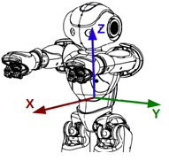

ALMotion¶
See also
| Control | Stiffness, Joint, Locomotion, Cartesian, Whole body. |
| Reflexes | Self-collision avoidance, External-collision avoidance, Fall manager, Smart Stiffness Diagnosis effect, Push Recovery, Slope compensation. |
| Idle | Idle. |
| Tools | General tools, Motion task. |
What it does¶
The ALMotion module provides methods which facilitate making the robot move.
Control¶
It contains four major groups of methods for controlling the:
- joint stiffness (basically motor On-Off): see Stiffness control,
- joint position (interpolation, reactive control): see Joint control,
- walk (distance and velocity control, world position and so on): see Locomotion control,
- robot effector in the Cartesian space (inverse kinematics, whole body constraints): see Cartesian control.
Reflexes¶
The ALMotion module implements also some “reflexes” such as Self-collision avoidance, External-collision avoidance, Fall manager, Smart Stiffness and Diagnosis effect.
- alter the motion to avoid self or external collision (see Self-collision avoidance, External-collision avoidance),
- adjust the stiffness to spare power when the robot is not moving (see Smart Stiffness),
- trigger a specific task when a fall is detected (see Fall manager), or when issues or errors are raised on a device potentially critical (see reflexes-diagnosis`).
Advanced users may need to deactivate all or part of the reflexes. For further details see: Deactivation of non-critical safety reflexes.
Idle¶
The module also provides tools to define the robot behavior when no user command is sent. See Idle.
Tools¶
This module gives also access to useful information about the robot hardware, such as the number of joints, their name, limits, the available sensors and so on. See General tools.
How it works¶
ALMotion runs at 50Hz (cycle of 20ms).
In ALMotion, every time you call a public method to request a motion, a “motion task” is created to handle the job. See Motion task to learn how to manage these tasks.
Performance and Limitations¶
Performance
ALMotion is a core module. As it manages some reflexes and updates the model every cycle, the module consumes a constant CPU. This consumption could increase during special tasks like walk.
The table below gives you some hints of ALMotion CPU consumption.
| Task \ Processor | Atom (NAO V4) |
|---|---|
| update Model | 3% |
| walking | 10.8% |
Adaptation to  Pepper specificities¶
Pepper specificities¶
We have tried hard to maintain a unique Motion API for both NAO and Pepper.
However, some adaptations were necessary:
| Group | Main adaptations | For further details, see ... |
|---|---|---|
| Stiffness | Manual Stiffness control is forbidden for Pepper‘s lower part. | Stiffness control |
| Locomotion control | Specific stability constraints on the leg. Locomotion methods are prohibited if power hatch is open. |
Locomotion control |
| Cartesian control | Most of the methods are unusable. | Cartesian control |
| Whole Body control | Do not use any Whole Body control methods. | Whole Body control |
| Safety reflexes | A specific safety reflex is dedicated. | Push Recovery |
| A specific safety reflex is dedicated. | Slope compensation | |
| Frontal security distance is correlated with speed. | External-collision avoidance | |
| Hardware issues trigger specific Rest reflexes. | Diagnosis effect |
Getting Started¶
Essential information to deal with ALMotion:
Axis definition¶
The X axis is positive toward the robot’s front, the Y from right to left and the Z is vertical.
{kind=link}
SI - International System of Unit¶
The ALMotion module uses the SI - International System of Units (meters, second, radian...).
How to name joints and body parts¶
Depending on the method chosen, ALMotion requires to name joints, group of joints or a body part.
| called ... | are used by ... | |
|---|---|---|
| Body parts | Effectors | Cartesian control and Whole Body control |
| Joint names can be called individually or by groups | Chains | Stiffness control, Joint control, General tools and Motion task. |
For further details, see:
Advanced Users¶
Motion from scratch¶
If you are familiar with the ALMotion definition and you want to go further creating advanced behavior in C++ like a new reflex, a better object tracker or use at the same time DCM module and ALMotion, see: Motion - advanced.
Deactivation of non-critical safety reflexes¶
Deactivation of very critical reflexes is not allowed under normal use.
To deactivate non-critical reflexes, use the relevant setNameOfReflexEnabled method.
The list below specifies whether the reflex deactivation is critical or not:
| Method |  NAO NAO |
Pepper |
|---|---|---|
ALMotionProxy::setCollisionProtectionEnabled |
OK | OK |
ALMotionProxy::setDiagnosisEffectEnabled |
OK | OK |
ALMotionProxy::setSmartStiffnessEnabled |
OK | OK |
ALMotionProxy::setExternalCollisionProtectionEnabled |
OK | Critical, Arms excepted |
ALMotionProxy::setFallManagerEnabled |
Critical | Critical |
ALMotionProxy::setPushRecoveryEnabled |
NA | Critical |